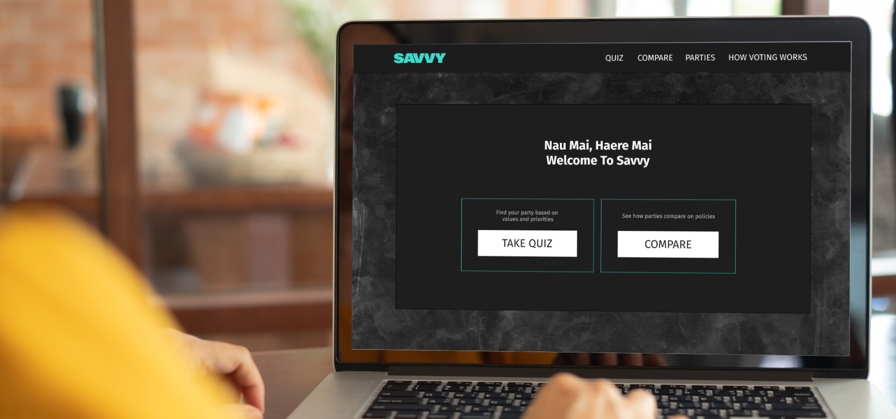
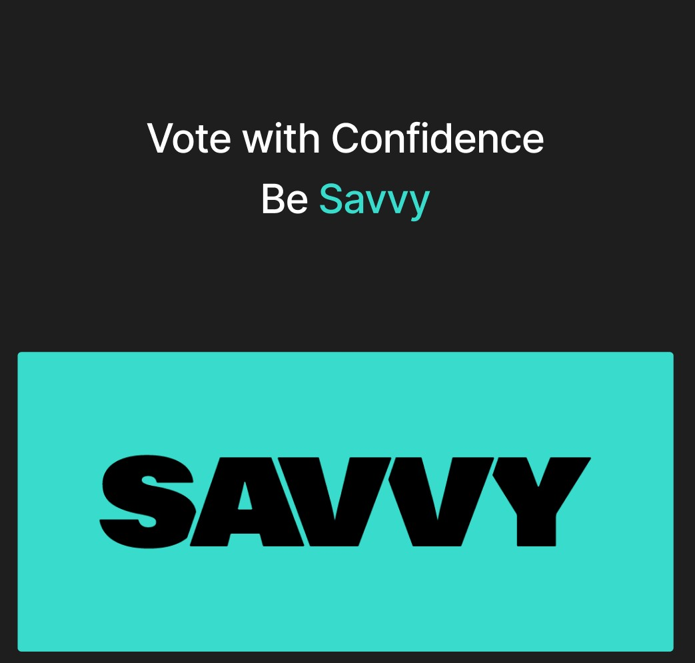
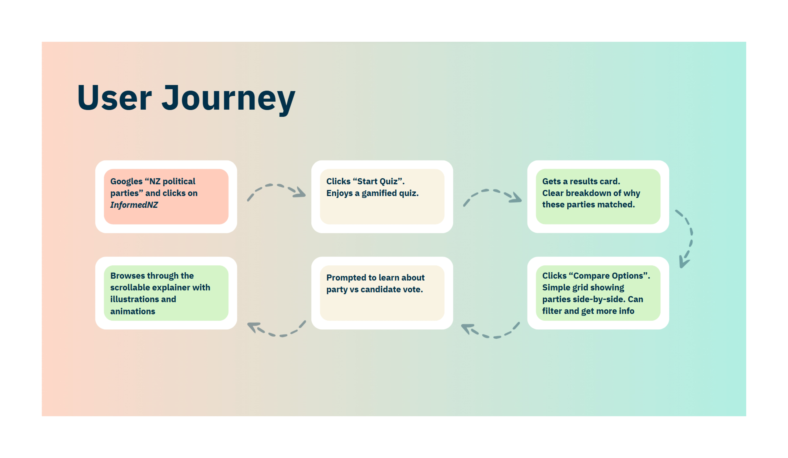
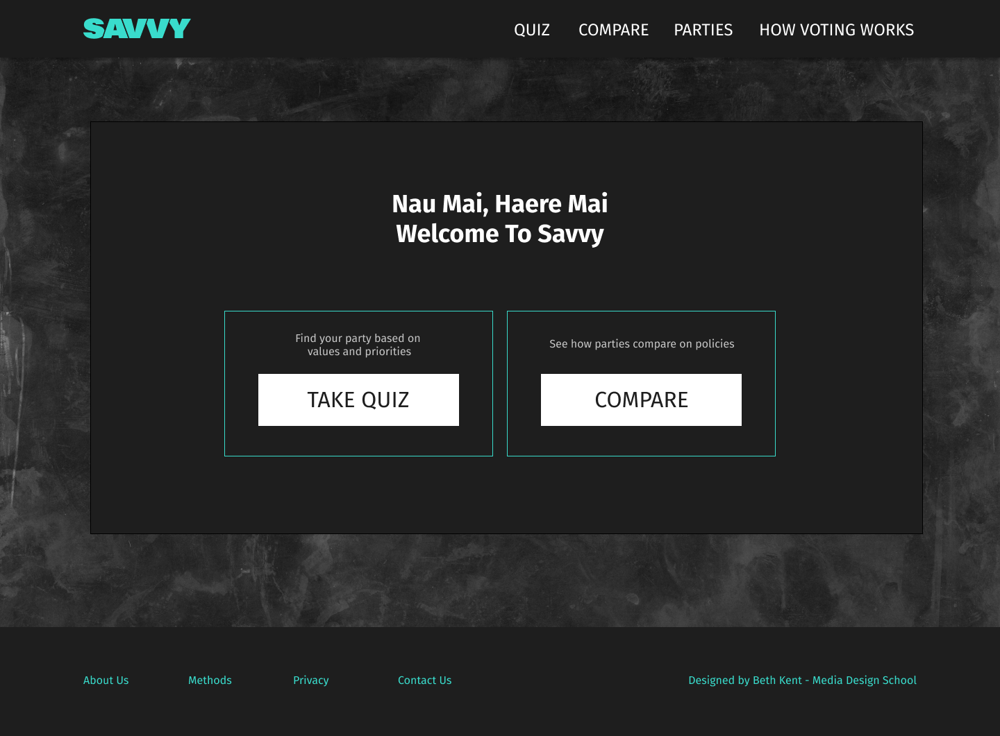
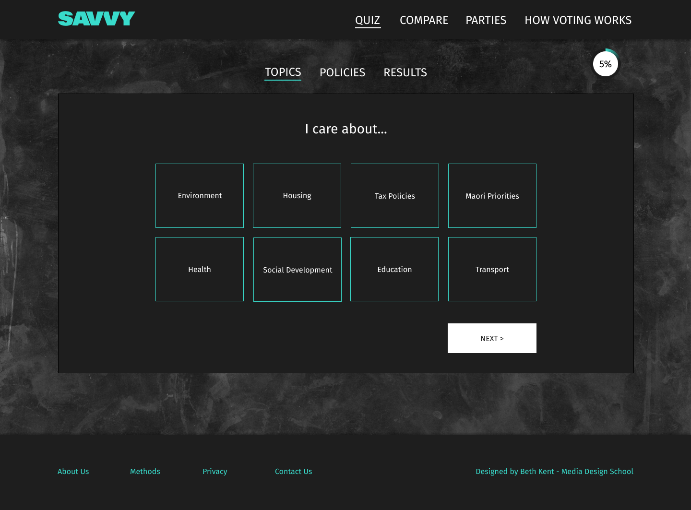
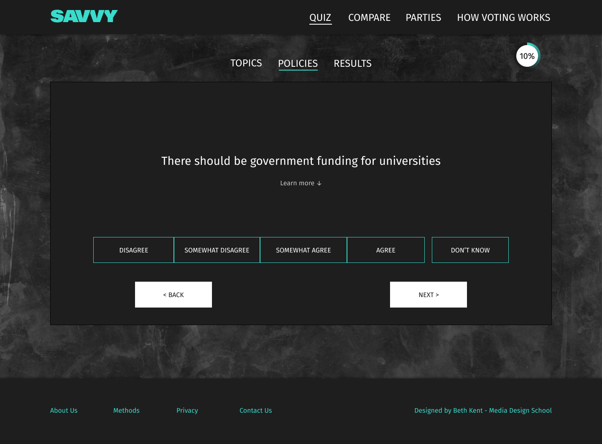
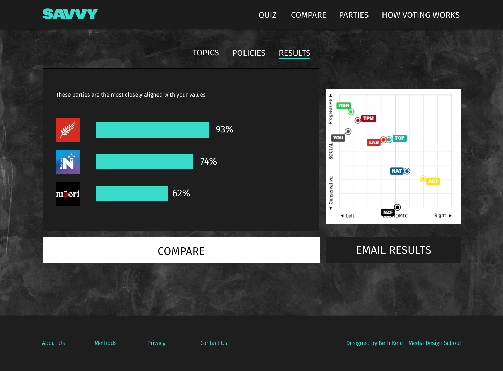
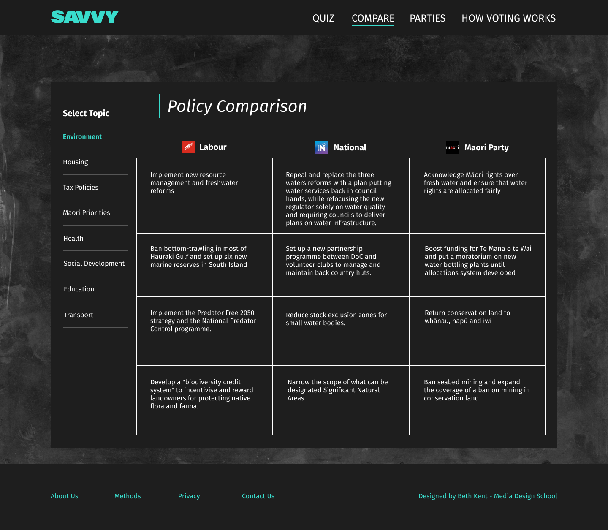

Savvy
A voting compass that enables young New Zealanders to make informed voting choices.
Understanding what party aligns with your beliefs
The Problem
It is difficult for young voters in New Zealand to make an informed voting choice due to a lack of easily available and understandable information about parties and governance.
The Challenge
Politics is multifaceted and complex and young people often lack experience of how their lives are affected by it. How do I create a solution that both educates and guides young people to make an informed voting decision with minimal mental load.
The Solution
Create a comprehensive website platform that allows users to compare and contrast policies, find out which party aligns with their values, and learn about NZ government.

Research
My goal was to understand what exact pain points might stop young people from voting.
Competitor Analysis - Vote Compass
While used and recommended by many in NZ, the quiz assumes users already understand the current NZ political climate. It asks questions about feelings in relation to current policies, which is not useful for many young New Zealanders who do not know what current policies are.
Secondary Research
Key Insights
Need for more information
There is a need for more information about candidates and policies.
Distrust towards NZ politics
There is a sentiment of distrust towards NZ politics as there is a feeling of broken promises from the elected parties.
Lack of digestible information
There is a lack of political information that is easy to digest.
Interviews
In interviews I addressed a lot of assumptions that I had regarding young voters in NZ.
"I didn't really understand what each party would do for me."Interview participant
Party history plays a role
Party history plays a role in how voters vote.
Issues that directly impact them
Voters really care about issues that directly impact them.
Lack of digestible information
There is a lack of political information that is easy to digest.
Ideation & Strategy
Target Audience
Young NZ voters 18–25 looking to better understand the political landscape.
Liam Davis
19 · Hospitality worker, Auckland
He wants to know that he's voting for a party that cares about the things he cares about.
Sophie Wilson
22 · University student, Christchurch
She wants to vote, but doesn't understand the impact that politics has on her life.
User Journey

User journey map
Design





Reflection & Learnings
This project was my first opportunity to experiment with processes that could guide users through extremely complex information. When trying to refine the user experience in this way, there is a lot of information that needs to be sorted and organised, only to be revealed to the user when relevant. That information sorting proved to be quite the challenge, and while I learnt a lot, there is a lot more I'd love to do in this space.